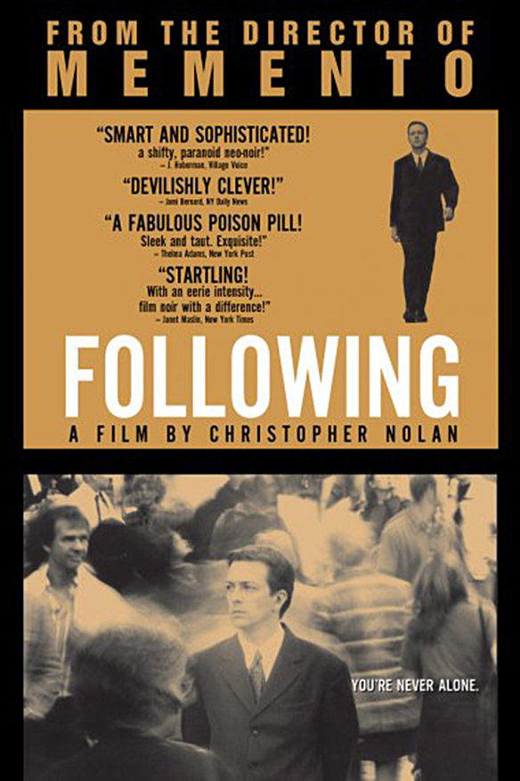

Преследование Following
 «От погони не уйти» Фильм на любителя, но он демонстрирует умение вести две сюжетные линии, которые независимо друг от друга способны заинтриговать. Нуар-съёмка отсылает к прошлому веку, а знание истории кинематографа позволяет оценивать подобные картины с толком, с чувством, с расстановкой. От рассказа главного героя зрителей буквально с первых секунд просмотра бросают во флэшбэк, где уже начинается удивительная история преследования. Позже в событиях прошлого будут также применены флэшбэки и флэшфорварды, что уже даёт характер стилю режиссёра. Тем более вторым проектом станет «Помни», где события вообще следуют в противоположном порядке. То есть, Кристофер Нолан не разработал свой стиль в процессе съёмок, а изначально следовал такой нелинейной последовательностью. Время — ключевой элемент в картине, так как в зависимости от времени персонаж может быть в одном месте или в нескольких (буквальная цитата Джокера из «Тёмного рыцаря», угадайте, кто режиссёр?). Рассказ повествует о странном человеке, писателе (это даже синонимы), который для вдохновения бродит по улицам Лондона, следит за незнакомцами, провожает их до мест назначения и следует чётким правилам. Простая, но от этого не менее странная деятельность героя, понятна, смысловой нагрузки здесь не наблюдается. Акцентируешь внимание на затемнение экрана между эпизодами, такой монтаж эпохи 60-х радует ностальгическими (по фильмам, разумеется) проектами. Можно даже сравнить «Преследование» с работами Альфреда Хичкока. Тем не менее, у Криса всего 70 минут хронометража, отчего события набирают обороты. Поражает ещё приём, при котором ты не чувствуешь спешки, а внезапная встреча с незнакомцем будто заготавливалась очень долгое время. Отношение к молодому человеку меняются, так как и без того странное занятие сводит его с Кобом, деятельность которого уже пресекает законы. Нелинейное повествование, отчего поначалу путаешься с положением героя и его местонахождением. Так как это не объясняется, просто следующий эпизод в уже линейном хронометраже. Мотив Коба забавный, эдакий Робин Гуд, только в более грязных делишках.
После сведения персонажей наступает химия и расставление приоритетов, отчего сразу видно активное влияние сильного и уверенного в себе Коба и тихого, замкнутого в своём мире, Молодого преследователя. К чему может привести
такая компания? К опасным делам, которые сказываются на персонаже. Как вдруг: затемнение экрана, другая, совершенно иная сцена, где главный герой в ином обличье обыгрывает отличные романтические попытки с дамой у барной стойки.
Что? Вот реально. Рассказ не прерывался, не забываем, что это всё большой флэшбэк, но внезапная смена положения путает. Режиссёр специально уделяет точное время, чтобы представить нам новую сцену, показать персонажей
(отчего Преследователя узнаёшь буквально второй раз), дабы после очередного затемнения экрана вернуть нас к дуэту воров лондонских коммуналок. Здесь стоит подумать, так как неизменный образ Молодого человека тут как тут. Вот, что поражает в этом кино. Оно снято просто, обычно, бюджет всего 6 тысяч Бенджаминов Франклинов, но со вкусом. Так ты погружаешься в разные истории, которые развиваются независимо друг от друга, отчего невозможно
выстроить хронологию. В одном из эпизодов воровского дела (назовём первую сюжетную линию так) на двери висит знак Бэтмена. Забавная деталь, учитывая, что в 2005 году Кристофер запустит трилогию о Тёмном рыцаре. Романтический эпизод
(соответственно вторая сюжетная линия) также развивается с подключением доверия персонажей, с открытием дамской души и просьбами, на которые мачо способен. Пока в одной из сюжетных линий не происходит метаморфоза
главного персонажа, что позволяет провести хронологию событий. Финальные детали отлично демонстрируют изменения тихони-преследователя, так как зрителю известны последующие события. Великолепный ход с пересечением параллельных линий
дарит бурю эмоций и восторг. Снять интересную историю в нелинейной последовательности, чтобы выдвинуть на пересечении сюжетных линий одну концовку, шокирующую зрителя — задача сложная. Мораль можно заключить только одну: воровать
плохо. Да и следить за прохожими тоже такое себе занятие. Дебютный проект удался, потому что игра со временем отразиться на всех (!) последующих работах режиссёра: от обратного повествования до путешествий сквозь сны, от
временных скачков Николы Тесла до Теории струн и Горизонта событий. Вот, где зарождается талант.